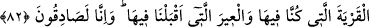

KARDEŞLERİNİN ÇARESİZLİĞİ
80. Ondan ümitlerini kesince, (meseleyi) gizli görüşmek üzere ayrılıp (bir kenara)
çekildiler. Büyükleri dedi ki: “Babanızın sizden Allah adına kesin söz aldığını, daha
önce de Yûsuf hakkında işlediğiniz kusuru bilmiyor musunuz? Babam bana izin
verinceye veya benim için Allah hükmedinceye kadar bu yerden asla
ayrılmayacağım. O hükmedenlerin en hayırlısıdır.”
81. Babanıza dönün ve deyin ki: “Ey babamız! Şüphesiz oğlun hırsızlık etti. Biz,
bildiğimizden başkasına şahidlik etmedik. Biz gaybın bekçileri değiliz.”
82. (İstersen) içinde bulunduğumuz şehre (Mısır halkına) ve beraber geldiğimiz
kervana sor. Biz gerçekten doğru söylüyoruz.”
“Ondan ümidlerini kesince” yani hiçbir umutları kalmayınca, Kâşifî der ki: “Yani
Yûsuf’tan ümidlerini kesip kardeşleri Bünyamin’i kendilerine vermeyeceğini
anlayınca” nasıl geri döneceklerine ve kardeşleri hakkında babalarına ne
söyleyeceklerini kendi aralarında “gizli görüşmek üzere ayrılıp” yanlarında yabancı
biri olmadan tek başlarına kalacak şekilde bir kenara “çekildiler.”
Yaşça “büyükleri” olan Rûbil veya akılca büyükleri olan Yahuda, ya da başkanları
olan ve kardeşlerine sözünü dinletebilen Şimon, bu gizli konuşma sonunda hep beraber
geri dönme fikri üzerinde ittifak ettikleri sırada buna rıza göstermedi, vardıkları bu
kararı beğenmeyerek “dedi ki: “Babanızın sizden Allah adına kesin” güvenilir bir
“söz aldığını,”
Bu söz, Allah’ın adını anarak yemin etmeleridir. Sözün Allah’tan olması ise O’nun
izniyle söz verilmiş olmasıdır.
Kâşifî şöyle der: Yâkub (a.s.)’ın oğullarından birisi diğerlerine: “Babam Bünyamin’e
zulmetmeyeceğinize dâir âhir zaman nebîsi Muhammed (a.s.) adına yemin ettirdi. Şimdi
ise bu iş ortaya çıktı, dedi.”
“Daha önce” yani bundan önce “de Yûsuf hakkında işlediğiniz kusuru” ve babanıza